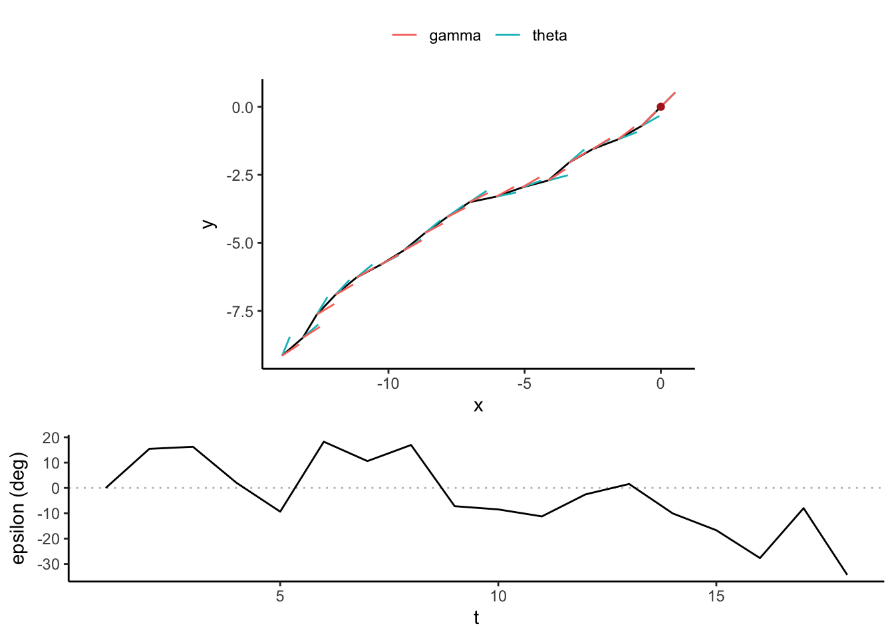

How do we tell if an animal was navigating towards a target? The third chapter of James Fahlbusch’s dissertation asks this question about whales and krill. He identified krill swarms from the whales’ feeding behavior, then looked at a window preceding the onset of feeding to ask how far away whales start navigating towards their target. It’s a very cool question with a perfect dataset to investigate it!
Simulated whale track
Designing an appropriate statistical model is going to be tricky. Let’s simulate a whale approaching a krill patch to explain why.
# Simulate 15 time stepst <-1:15# Initial conditions: start at 0,0 heading NEx <- y <- theta <-numeric(length(t))x[1] <- y[1] <-0theta[1] <- pi /4# At each time step, turn a little bit# New random direction is drawn from a von Mises distribution# centered on the previous time step's direction# kappa defines the concentration of the turning angle distributionkappa <-30# Start swimming!for (.t in2:max(t)) { x[.t] <- x[.t -1] +cos(theta[.t -1]) y[.t] <- y[.t -1] +sin(theta[.t -1]) theta[.t] <- CircStats::rvm(1, theta[.t -1], kappa)}# Put the track together# target is the last point of the tracktarget <-c(x = x[length(x)], y = y[length(y)])track <-tibble(t, x, y, theta)# Let's see itggplot(track, aes(x, y)) +geom_path() +annotate("point", target["x"], target["y"], color ="firebrick")
Look at the whale’s path from approximately (4, 6) to the krill swarm, in red. Sort of looks like the whale started navigating towards the target at that point, doesn’t it? Let’s look at the relative angle between each turning angle and the actual bearing to the krill. I’ve shaded in the region where the difference between the step direction and the bearing to the target is within 15°. If we define navigating towards a target as “all steps are within 15° of the target’s bearing”, we can see that the last third of the track appears to be “navigating to the target”.
# Utility function for normalizing an angle to [-pi, pi)normalize_angle <- \(x) (x + pi) %% (2* pi) - pi# gamma = bearing to krill# epsilon = difference between step angle (theta) and gammatrack <-mutate(track, gamma =atan2(target["y"] - y, target["x"] - x),epsilon =normalize_angle(gamma - theta))ggplot(track, aes(t, epsilon)) +geom_hline(yintercept =0, color ="gray", linetype ="dashed") +geom_line() +annotate("ribbon", x =10:15,ymin =-15* pi /180, ymax =15* pi /180, alpha =0.2) +scale_y_continuous("Bearing error",breaks =seq(-pi /4, pi /12, by = pi /12),labels =seq(-45, 15, by =15))
Figure 1: The last third of a correlated random walk has the apparent appearance of navigating to a target.
Here’s the problem: this whale doesn’t know where the krill are. We didn’t tell the whale where to go, we only said to turn slightly at each time step. This track is therefore a correlated random walk (CRW), with no knowledge of the krill swarm’s location. By picking the target as the end of the track, we guarantee some part of a non-navigating track will look like navigation just by chance. The stronger the correlation (our turning angle concentration, \(\kappa\)), the farther back in time this false positive result will extend.
Correlated and biased random walks
If the whale is really navigating towards something, we should see a biased random walk (BRW) instead. We can use a single model to describe both CRWs and BRWs. The parameter \(\beta\) tilts the model one way or the other: \(\beta=0\) is a CRW and \(\beta=1\) is a BRW. We specify the model as:
Two notes about Equation 1. First, our calculation for \(\mu_t\) is a bit misleading. That’s an arithemtic weighted average, where the average of \(\theta_{t-1}\) and \(\gamma_t\) are weighted by \(\beta\). But \(\theta\) and \(\gamma\) are angles, so we actually want a circular weighted average. Let’s define the circular weighted average using vectors. Start with the unit vectors for the two angles we want to average. Multiply them by the weights. Then get the bearing of their sum. Graphically the weighted average (bearing of purple) looks like this, for \(\theta = 30 ^{\circ}\) (red), \(\gamma = 135 ^{\circ}\) (blue), and \(\beta = 0.8\).
circ_wgt_mean <-function(a, w) {# Using vector sums ax <-cos(a) * w ay <-sin(a) * w x <-sum(ax) y <-sum(ay)atan2(y, x)}
Second note about Equation 1. We define \(\gamma\) at the bearing to the target, which is the last point of the track \((x_n, y_n)\). That’s circular logic! There’s a workaround, though. We can simulate the walk in reverse, starting at the end and repelling from the end instead of being attracted to it.
Therefore, our actual model, which uses a circular weighted mean for \(\mu\) and walks backwards in time is:
Let’s use this model to demonstrate the ambiguity between CRWs and BRWs for the navigation problem. We define a function sim_tail(), which simulates the tail end of random walk. Basically, it finds the shaded part of Figure 1. Starting at the end of a track, it walks backwards until the absolute difference between the step direction and the bearing to the target (\(\epsilon\)) exceeds our critical threshold (\(\bar \epsilon\)).
# Simulate a tailsim_tail <-function(epsilon_thr, kappa, beta, max_t =1e3) {# Initial settings# x,y = position# theta = step direction# gamma = bearing to target# epsilon = error (difference of theta, gamma) x <- y <- theta <- gamma <- epsilon <-numeric(max_t) x[1] <- y[1] <- epsilon[1] <-0 theta[1] <- gamma[1] <- pi /4 t <-2while (abs(epsilon[t -1]) <= epsilon_thr && t < max_t) {# Update location from previous step direction x[t] <- x[t -1] -cos(theta[t -1]) y[t] <- y[t -1] -sin(theta[t -1])# Draw next step gamma[t] <-atan2(-y[t], -x[t]) mu <-circ_wgt_mean(c(theta[t -1], gamma[t]), c(1- beta, beta)) theta[t] <-normalize_angle(CircStats::rvm(1, mu, kappa)) epsilon[t] <-normalize_angle(gamma[t] - theta[t]) t <- t +1 }head(tibble(t =seq(max_t), x, y, theta, gamma, epsilon), t -1) %>%mutate(dist =sqrt(x^2+ y^2))}# Plot the tailplot_tail <-function(t) { angles <-pivot_longer(t, c(theta, gamma),names_to ="angle", values_to ="radians") %>%mutate(xend = x +0.75*cos(radians),yend = y +0.75*sin(radians)) epsilon_labels <-pretty(seq(min(t$epsilon) *180/pi,max(t$epsilon) *180/pi,length.out =5)) epsilon_breaks <- epsilon_labels * pi/180 cowplot::plot_grid(ggplot(t, aes(x, y)) +geom_path() +geom_segment(aes(xend = xend, yend = yend, color = angle), angles) +annotate("point", 0, 0, color ="firebrick") +coord_fixed() +theme(legend.title =element_blank(),legend.position ="top"),ggplot(t, aes(t, epsilon)) +geom_hline(yintercept =0, color ="gray", linetype ="dotted") +geom_line() +scale_y_continuous("epsilon (deg)",breaks = epsilon_breaks,labels = epsilon_labels),ncol =1,rel_heights =c(2, 1) )}
Let’s see a random tail for \(\bar \epsilon\) = 30°, \(\kappa\) = 20, and \(\beta\) = 0 (i.e., a CRW).
crw <-sim_tail(30* pi /180, kappa =20, beta =0)plot_tail(crw)

Figure 2: Tail of a correlated random walk with \(\bar \epsilon\) = 30° and \(\kappa\) = 20.
This tail shows \(\epsilon\) can remain in the range \([-\hat{\epsilon}, \hat{\epsilon}]\) for a pretty long time (~20 steps), even when there’s no bias towards the target.
Let’s simulate a bunch of tails for \(\beta\) = 0, 0.5, and 1 (i.e., CRW, mixed BCRW, and BRW) at different values of \(\hat{\epsilon}\). If the length of the tails overlap, our metric is a poor fit for differentiating the null (CRW) and alternative (BRW) models.
Figure 3: The length of a tail, defined as the number of steps at the end of a random walk within \(\epsilon\) of the final location, is not substantially different between the null model (\(\beta = 0\); CRW) and the alternative model (\(\beta = 1\); BRW). Lines and shaded areas represent the mean and 80% CI of the simulated tail lengths across \(\epsilon\) thresholds. The inset figure shows the same data, limited to \(\epsilon\) < 30°.
Figure 3 shows that a CRW with even moderate concentration (\(\kappa\) = 10) will produce similar tails as a BRW for \(\hat{\epsilon}\) < 30°.
Inferring navigation
If the tail length metric fails to differentiate CRW and BRW motion, we must turn to other options to infer navigation. Here I describe four different track generating processes that could represent navigation.
Track generating processes
Turning angle concentration increases
We assume the track is a CRW both before and after the prey detection event (i.e., \(\beta\)=0), but \(\kappa\) increases post-detection. For this option, we would try to infer 3 parameters:
The time of prey detection \(\hat{t}\)
The concentration of turning angles prior to prey detection \(\kappa_{t \lt \hat{t}}\)
The concentration of turning angles prior to prey detection \(\kappa_{t \geq \hat{t}}\)
Turning angles bias towards target
We assume the track switches from a CRW to a BRW after the prey detection event. For this option, we would try to infer 3 parameters:
The time of prey detection \(\hat{t}\)
The concentration of turning angles \(\kappa\)
The amount of bias towards the target \(\beta\)
Turning angles bias and concentration increases
This is a combination of the previous two processes: a switch from CRW to BRW and concentration increases. We would try to infer 4 parameters:
The time of prey detection \(\hat{t}\)
The concentration of turning angles prior to prey detection \(\kappa_{t \lt \hat{t}}\)
The concentration of turning angles prior to prey detection \(\kappa_{t \geq \hat{t}}\)
The amount of bias towards the target \(\beta\)
Bias increases as predator nears target
Rather than assuming a discrete state change, this option assumes the whale increasingly navigates towards the target as it gets closer. This could be the case if the strength of the external cue is a gradient. To do this, we treat \(\beta\) as exponentially decreasing with distance to the target.
Where \(\beta_0\) is the value of \(\beta\) at the target, \(\lambda\) is the decay rate, and \(d\) is the distance to the target. Therefore we are estimating 3 parameters.
The concentration of turning angles \(\kappa\)
\(\beta_0\)
\(\lambda\)
Model fitting and comparison
Having demonstrated that two different processes may produce indistinguishable tail length distributions, we must also wonder whether the four generating processes described above are identifiable. We will test that hypothesis by simulating 1000 tracks from each of the generating processes. Then, we will fit each of the four models to each set of tracks and use model comparison (Bayes factors) to estimate the probability the set resulted from the actual generating process. If the models are identifiable, then we should see strong evidence supporting the actual generating process over the alternatives. Identifiability likely varies with parameters (\(\kappa\), \(\beta\), their variations, and so on), so we must repeat the test for a variety of parameter values.
Each generating process parameterizes the model with slight modifications.
Process 1 sets \(\beta\) to 0 (CRW) but increases \(\kappa\) after the detection event
Process 2 keeps \(\kappa\) the same throughout the track, but increases \(\beta\) after the detection event
Process 3 combines the increase in \(\kappa\) and \(\beta\)
Process 4 doesn’t have a detection event, but \(\beta\) exponentially decays the farther the track is from the target
The following code generates 1000 tracks from each process.
# Unit vector convenience functionunit <- \(alpha) c(cos(alpha), sin(alpha))# Process 1: CRW with increasing angle concentrationprocess1 <-function(t_hat, kappa1, kappa2, n) {# Process 1: only CRW, beta is 0 beta <-0# Initial conditions x <- y <- theta <- gamma <- mu <-numeric(n)for (t in (n -1):1) { gamma[t] <-atan2(y[n] - y[t +1], x[n] - x[t +1]) mu_vec <-unit(theta[t +1]) * (1- beta) +unit(gamma[t +1]) * beta mu[t] <-atan2(mu_vec[2], mu_vec[1])# Process 1 changepoint in kappa theta[t] <- CircStats::rvm(1, mu[t], ifelse(t < t_hat, kappa1, kappa2)) x[t] <- x[t +1] -cos(theta[t]) y[t] <- y[t +1] -sin(theta[t]) }tibble(t =1:n, x, y, theta, gamma, dist = (sqrt(x^2+ y^2)))}# Process 2: Switch from CRW to BRWprocess2 <-function(t_hat, kappa, beta, n) {# Initial conditions x <- y <- theta <- gamma <- mu <-numeric(n)for (t in (n -1):1) { gamma[t] <-atan2(y[n] - y[t +1], x[n] - x[t +1]) beta_t <-ifelse(t < t_hat, 0, beta)# Process 2 changepoint in beta mu_vec <-unit(theta[t +1]) * (1- beta_t) +unit(gamma[t +1]) * beta_t mu[t] <-atan2(mu_vec[2], mu_vec[1]) theta[t] <- CircStats::rvm(1, mu[t], kappa) x[t] <- x[t +1] -cos(theta[t]) y[t] <- y[t +1] -sin(theta[t]) }tibble(t =1:n, x, y, theta, gamma, dist = (sqrt(x^2+ y^2)))}# Process 3: Switch from CRW to BRW and increase kappaprocess3 <-function(t_hat, kappa1, kappa2, beta, n) {# Initial conditions x <- y <- theta <- gamma <- mu <-numeric(n)for (t in (n -1):1) { gamma[t] <-atan2(y[n] - y[t +1], x[n] - x[t +1]) beta_t <-ifelse(t < t_hat, 0, beta)# Process 3 changepoint in beta mu_vec <-unit(theta[t +1]) * (1- beta_t) +unit(gamma[t +1]) * beta_t mu[t] <-atan2(mu_vec[2], mu_vec[1])# Process 3 changepoint in kappa theta[t] <- CircStats::rvm(1, mu[t], ifelse(t < t_hat, kappa1, kappa2)) x[t] <- x[t +1] -cos(theta[t]) y[t] <- y[t +1] -sin(theta[t]) }tibble(t =1:n, x, y, theta, gamma, dist = (sqrt(x^2+ y^2)))}# Process 4: beta increases as predator nears targetprocess4 <-function(t_hat, kappa, beta0, lambda, n) {# Initial conditions x <- y <- theta <- gamma <- mu <-numeric(n)for (t in (n -1):1) { gamma[t] <-atan2(y[n] - y[t +1], x[n] - x[t +1])# Process 4 beta w.r.t. distance dist_t <-sqrt((y[n] - y[t +1])^2+ (x[n] - x[t +1])^2) beta_t <- beta0 *exp(-lambda * dist_t) mu_vec <-unit(theta[t +1]) * (1- beta_t) +unit(gamma[t +1]) * beta_t mu[t] <-atan2(mu_vec[2], mu_vec[1]) theta[t] <- CircStats::rvm(1, mu[t], kappa) x[t] <- x[t +1] -cos(theta[t]) y[t] <- y[t +1] -sin(theta[t]) }tibble(t =1:n, x, y, theta, gamma, dist = (sqrt(x^2+ y^2)))}# Generate four sets of tracksn_iter <-1000n_steps <-100process1_params <-list(t_hat =50, kappa1 =20, kappa2 =40, n = n_steps)process2_params <-list(t_hat =50, kappa =40, beta =0.25, n = n_steps)process3_params <-list(t_hat =50, kappa1 =20, kappa2 =40, beta =0.25, n = n_steps)process4_params <-list(t_hat =50, kappa =40, beta0 =0.25, lambda =0.05, n = n_steps)tracks <-list(process1 =lapply(seq(n_iter), \(x) do.call(process1, process1_params)),process2 =lapply(seq(n_iter), \(x) do.call(process2, process2_params)),process3 =lapply(seq(n_iter), \(x) do.call(process3, process3_params)),process4 =lapply(seq(n_iter), \(x) do.call(process4, process4_params)))
Compare likelihoods
What is the likelihood of the generated tracks being generated by each of the four processes? If they’re identifiable, we should see separation here. Note the likelihoods are presented on the log scale.
Figure 4: The likelihood of a track coming from its actual generating process is not substantially different than the likelihood of a different generating process. For example, consider tracks generated by process 1 (left set of boxplots). The distribution of likelihoods those tracks came from process 1 (green) largely overlaps the distribution of likelihoods those tracks came from process 3 (purple).